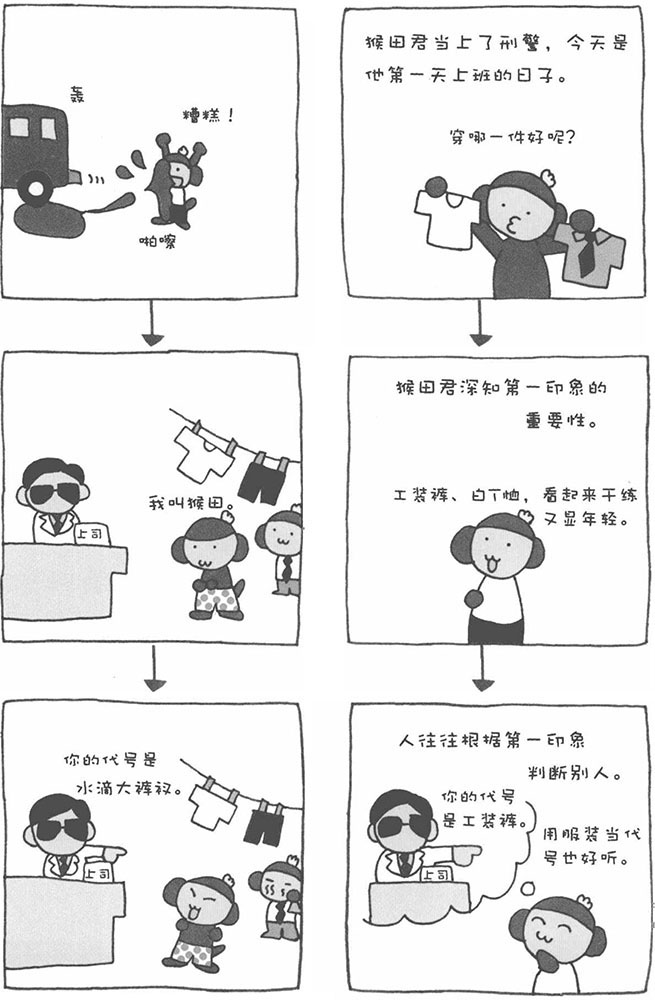

两个人初次见面时，留给对方的第一印象非常重要。也许很多女性会说："我不以第一印象来判断别人。"实际上，第一印象或多或少都会对人物的整体评价产生影响。
接下来，我们来做一个实验。请您暂时抛开心中的杂念，认真听我为您读以下两个人的简单介绍。
A君，28岁，男性，供职于A商业公司。同事们都对他的勤奋、认真表示赞许。他的缺点是不够耐心，不过深得部下的信任。
B君，28岁，男性，供职于B商业公司。他的缺点是不够耐心。同事们都对他的勤奋、认真表示赞许，而且深得部下的信任。
听了以上两个人的简介之后，您更喜欢哪个人呢？两个人的简介内容基本是一样的，听者也许感觉不到太大的差别。不过，您是不是对B君不够耐心的缺点印象更加深刻呢？实际上，两个人都有不够耐心的缺点，只是"不够耐心"在介绍文中出现的位置不同罢了。放在前面，就更容易让人记住，这就使所谓的"开头效应"。换句话说，开头出现的内容，将左右一个人的整体评价。
因此，最先给别人的信息是非常重要的。对于初次见面的人，我们一定要注意自己的形象和言行。否则，可能会影响对方对我们的整体评价。总而言之，第一印象是非常重要的。
